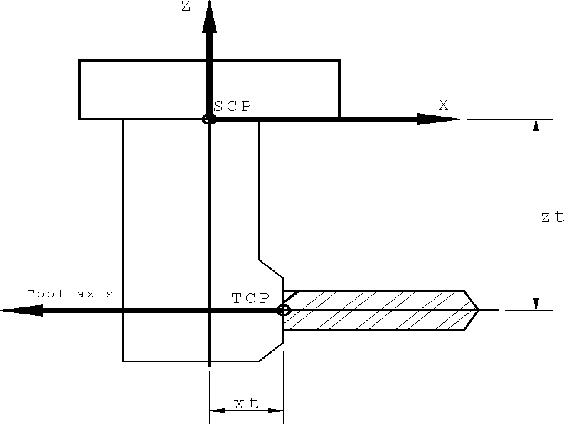
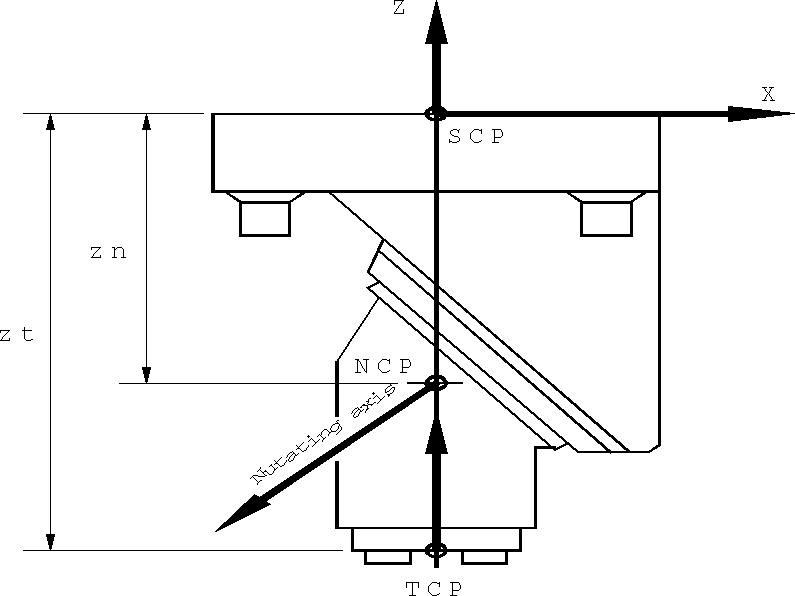

The TOOLNO Command [ML]
The TOOLNO command is used to optionally specify tool and head properties in advance of the SELECT, LOAD and UNLOAD commands that reference the tools and/or heads. This command is valid only for mills and lathes.
\(\textbf{TOOLNO / } \Big[\,\big[\,\textbf{TOOL},\big] \,\mathtt{<\!tool\_information\!>} \,\Big]\; \Big[,\textbf{HEAD}, \mathtt{<\!head\_information\!>}\,\Big]\)
Tool information refers to the actual cutting tool:
\(\ldots \; \mathit{tool\_id} \; \begin{bmatrix},\textbf{IN}, \begin{pmatrix}\begin{array}{l} \mathit{pocket} \\ \textbf{AUTO} \end{array}\end{pmatrix}\end{bmatrix} \begin{bmatrix} ,\! \begin{array}{l} \textbf{MILL} \\ \textbf{TURN} \end{array}\end{bmatrix} \begin{bmatrix} ,\! \begin{array}{l} \textbf{MAIN} \\ \textbf{SIDE} \end{array}\end{bmatrix} \; \big[,\textbf{TLNAME},\mathtt{'}\mathit{string}\,\mathtt{'}\,\big] \; \ldots\)
\(\ldots \; \big[,\textbf{LENGTH},\mathit{height}\,\big] \; \big[,\textbf{DIAMET},\mathit{dia}\,\big] \; \; \ldots\)
\(\ldots \; \begin{bmatrix}, \textbf{OSETNO}, \begin{pmatrix}\begin{array}{l} \mathit{offset} \\ \textbf{SAME} \end{array}\end{pmatrix}\end{bmatrix} \begin{bmatrix}, \textbf{ADJUST}, \begin{pmatrix}\begin{array}{l} \textbf{NOW} \\ \textbf{NEXT} \end{array}\end{pmatrix}\end{bmatrix} \icamrange{1.6}{0} \begin{bmatrix} ,\! \begin{array}{l} \textbf{CLW} \\ \textbf{CCLW} \end{array}\end{bmatrix} \begin{bmatrix} ,\! \begin{array}{l} \textbf{LARGE} \\ \textbf{SMALL} \end{array}\end{bmatrix} \; \ldots\)
\(\ldots \; \big[,\textbf{MANUAL}\,\big] \; \big[,\textbf{START}\,\big] \; \big[,\textbf{RETAIN}\,\big] \; \big[,\textbf{TIMES},\mathit{factor}\,\big] \; \; \ldots\)
\(\ldots \; \begin{bmatrix}\,\begin{array}{l} \big[,\textbf{ATANGL},\mathit{at}\,\big] \; \big[,\textbf{SETANG},\mathit{st}\,\big] \\ \;\,,\textbf{TLVEC},\mathit{it,jt,kt} \end{array}\end{bmatrix} \; \ldots\)
\(\ldots \; \Big[,\textbf{SETOOL} \,\big[\mathit{,xt,yt}\,\big],\mathit{zt}\,\Big]\)
Head information refers to exchangeable head units that are used for special purpose machining (for example, right angle heads, nutating heads, long reach and so on):
\(\ldots \; \mathit{head\_id} \; \begin{bmatrix},\textbf{IN}, \begin{pmatrix}\begin{array}{l} \mathit{station} \\ \textbf{AUTO} \end{array}\end{pmatrix}\end{bmatrix} \icamrange{1.6}{0} \begin{bmatrix} ,\! \begin{array}{l} \textbf{CLW} \\ \textbf{CCLW} \end{array}\end{bmatrix} \; \big[,\textbf{TLNAME},\mathtt{'}\mathit{string}\,\mathtt{'}\,\big] \; \ldots\)
\(\ldots \; \big[,\textbf{MANUAL}\,\big] \; \big[,\textbf{START}\,\big] \; \big[,\textbf{TIMES},\mathit{factor}\,\big] \; \; \ldots\)
\(\ldots \; \bigg[,\textbf{ROTATE} \big[,n \,\big]\, \Big[\big[,in_2,jn_2,kn_2\,\big]\,,in_1,jn_1,kn_1\,\Big]\,\bigg] \; \ldots\)
\(\ldots \; \begin{bmatrix}\begin{array}{l} \bigg[,\textbf{ATANGL}\,\Big[\big[,an_2\,\big],an_1\,\Big],at \,\bigg] \; \bigg[,\textbf{SETANG}\,\Big[\big[,sn_2\,\big],sn_1\,\Big],st \,\bigg] \\ ,\textbf{TLVEC},it,jt,kt \end{array}\end{bmatrix} \; \ldots\)
\(\ldots \; \bigg[,\textbf{SETOOL}\,\Big[\big[\,[,xn_2,yn_2,zn_2 \,],xn_1,yn_1,zn_1\,\big],xt,yt \,\Big],zt \,\bigg] \; \ldots\)
\(\ldots \; \bigg[,\textbf{SETTCP}\,\Big[\big[,xr,yr \,\big],zr \,\Big] \,\bigg]\)
The TOOLNO command is one of a group of commands used for the management of tools. This command can optionally be used to define the tool and head properties, so that only the tool_id or head_id need later be specified with the other commands in the group. The TOOLNO command performs no machine related actions; it is used to preset the internal GENER tooling tables for those tools specified.
Other commands in the group include:
SELECT and SELCTL, which pre-select a tool or head ready for use, but do not load it;
LOAD, LOADTL and TURRET, which performs the action of loading the tool or head; and
UNLOAD, which removes the current tool from the spindle or head from the machine.
The TOOLNO command can be used in the part program, usually near the beginning, to preset all of the options for the tools and heads that follow. It can appear anywhere within a program but for the option values to apply, it must appear before the SELECT or LOAD command that references the tool or head.
Tooling information is stored internally in $TLTAB and related tables (see “Tooling Variables”). There is a built-in limit of 200 tools that can be recorded, after which further new tool definitions will be ignored with an error. There is also a built-in limit of 100 heads that can be recorded, after which further new head definitions will be ignored with an error.
Tool Parameters
\(\mathit{tool\_id} \; \begin{bmatrix},\textbf{IN}, \begin{pmatrix}\begin{array}{l} \mathit{pocket} \\ \textbf{AUTO} \end{array}\end{pmatrix}\end{bmatrix}\)
Some machines identify tools by the pocket number in the tool changer, other machines identify tools by a number that is unique to the tool, a tool id.
If tool_id is coded without the “IN,pocket” keyword, GENER will ascertain that it is a pocket number or tool id, depending on the machine description responses in QUEST. If the automatic tool changer is defined as a pocket type changer then the tool_id field represents a pocket number. If the automatic tool changer is defined as an id type changer then the tool_id represents an id number.
If “IN,pocket” is specified, then tool_id is the tool id and pocket is the pocket number. If AUTO is used for the pocket number, GENER will select a pocket automatically. Automatic pocket selection first scans through all tools referenced in previous TOOLNO, LOAD/TOOL and SELECT/TOOL commands. If the same tool id was previously referenced with the same cutter diameter (either via a CUTTER CL record or the DIAMET qualifier), then that tool’s pocket number is selected. Otherwise, the next available pocket is chosen.
\(\begin{bmatrix} ,\! \begin{array}{l} \textbf{MILL} \\ \textbf{TURN} \end{array}\end{bmatrix}\)
The MILL and TURN keywords optionally identify the type of tool being defined on a mill-turn lathe. The TURN keyword indicates that the tool is used for turning. The MILL keyword indicates that the tool is used for milling, drilling, etcetera. If neither MILL nor TURN are specified, then the tool type is defined by the APPLY/MILL or APPLY/TURN mode currently in effect (see “Milling vs. Turning for C Axis Lathes”).
\(\begin{bmatrix} ,\! \begin{array}{l} \textbf{MAIN} \\ \textbf{SIDE} \end{array}\end{bmatrix}\)
The MAIN and SIDE options apply to two specific machine types: a 2 axis lathe with two turrets and a 4 axis merging lathe (which always has two turrets). The important distinction between these two machine types is that on the 4 axis merging lathe the two turrets (or heads) can move independently. On multi-turret 2 axis machines, the MAIN head usually performs outside diameter work and the SIDE head performs the inside diameter work.
On a 2-axis lathe with dual turrets, the MAIN and SIDE keywords identify the turret on which the tool will be loaded. If neither MAIN nor SIDE are specified, then the turret is defined by the last one specified in a TOOLNO, LOAD or SELECT command. The MAIN turret is assumed at the start of the program.
On a 4-axis merging lathe, the MAIN and SIDE keywords optionally identify the head on which the tool will be loaded. The MAIN keyword indicates that the tool will be loaded on the main or primary head. The SIDE keyword indicates that the tool will be loaded on the side or secondary head. If neither MAIN nor SIDE are specified, then the head is defined by the HEAD/MAIN or HEAD/SIDE mode currently in effect (see “Merging Lathes”).
\(\big[,\textbf{LENGTH},\mathit{height}\,\big]\)
The LENGTH keyword is used to specify the height of the tool, measured from the spindle control point to the tool tip. The tool height must be a zero or positive real number. If omitted, a length of zero is assumed. GENER will shift the machine along the tool axis by the specified height when this tool is loaded, unless RTCP is active.
\(\big[,\textbf{TLNAME},\mathtt{'}\mathit{string}\,\mathtt{'}\,\big]\)
The TLNAME keyword is used to specify the name of the tool. The tool name will appear in diagnostic messages. It will appear in the Full Interface window status bar and in the Progress window. When using HTML output, the tool name will appear in the Navigator window (appended to the tool number) as a link to the tool change operation. The tool name can also be specified using the TLNAME command).
\(\big[,\textbf{DIAMET},\mathit{dia}\,\big]\)
The DIAMET keyword is used to specify the diameter of the tool. The tool diameter must be a zero or positive real number. If omitted, the current CUTTER diameter is assumed. GENER uses the tool diameter when performing automatic pocket selection (the IN,AUTO couplet).
\(\begin{bmatrix}, \textbf{OSETNO}, \begin{pmatrix}\begin{array}{l} \mathit{offset} \\ \textbf{SAME} \end{array}\end{pmatrix}\end{bmatrix}\)
The OSETNO keyword is used to specify a cutter length compensation switch to associate with the tool. This option performs the same actions as the “CUTCOM/ON,LENGTH,offset” command. The offset number must be a zero or positive and it must fall within the range of available offsets on the machine. Specify SAME in place of an offset number to use the same number as the tool. If omitted, a machine default is assumed.
\(\begin{bmatrix}, \textbf{ADJUST}, \begin{pmatrix}\begin{array}{l} \textbf{NOW} \\ \textbf{NEXT} \end{array}\end{pmatrix}\end{bmatrix}\)
The point of application of length compensation and the tool axis shift can be controlled using the ADJUST keyword. “ADJUST,NOW” will generate a command block, immediately following the tool change sequence, to reposition the tool to the tool change point using the new tool length and compensation register values. “ADJUST,NEXT” defers the application of these values until the next motion block. The default adjust method is selected in QUEST and is used if no method is specified on the command line.
\(\icamrange{1.6}{0} \begin{bmatrix} ,\! \begin{array}{l} \textbf{CLW} \\ \textbf{CCLW} \end{array}\end{bmatrix}\)
For machines having automatic tool changers, the direction of tool drum rotation can be specified with the CLW and CCLW keywords. If a single direction is specified, then it is used for rotating the drum to get the tool and for rotating the drum to put the tool away; if two directions are specified, the first is the load direction and the second is the unload direction; if no rotation is specified the default rotation direction specified in QUEST will be used.
\(\begin{bmatrix} ,\! \begin{array}{l} \textbf{LARGE} \\ \textbf{SMALL} \end{array}\end{bmatrix}\)
Some automatic tool changers have grippers that must adjust for differences in tool holder size. The minor words SMALL and LARGE define the two basic settings supported by GENER.
\(\big[,\textbf{MANUAL}\,\big]\)
For machines having automatic tool changers, the MANUAL keyword can be specified to use a manual tool change procedure. Manual procedures are available for preselect, load and put-away sequences. For machines not having automatic tool changers, MANUAL is the default.
\(\big[,\textbf{START}\,\big]\)
The START keyword will suppress the output of NC control tape when the tool is first loaded. This feature can be used to define in GENER an initial starting condition on the machine.
\(\big[,\textbf{RETAIN}\,\big]\)
The RETAIN keyword will suppress the output of NC control tape to unload a tool. This feature can be used to omit the actions that would normally remove a tool from the spindle prior to unloading a head from the machine.
\(\big[,\textbf{TIMES},\mathit{factor}\,\big]\)
The TIMES modifier is used to compensate for special tooling that affects the direction of rotation or that causes a speed up or slow down effect on the RPM. The factor is used to adjust the spindle speed and direction (coded on the SPINDL command) for a specific tool. Negative values will cause the spindle direction to be output opposite the direction specified. The speed requested on the SPINDL command is multiplied by factor and the resulting value is used.
\(\begin{bmatrix}\,\begin{array}{l} \big[,\textbf{ATANGL},\mathit{at}\,\big] \; \big[,\textbf{SETANG},\mathit{st}\,\big] \\ \;\,,\textbf{TLVEC},\mathit{it,jt,kt} \end{array}\end{bmatrix}\)
These qualifiers are used to define the orientation of the tool when all rotary axes are at their zero position. By default the tool axis is oriented along the positive Z axis of the machine. An alternate orientation can be given using either a tool axis vector or with Euler angles.
If using a vector, the ijk components of the tool axis vector (it,jt,kt) must be specified following the TLVEC keyword as shown in the syntax above.
If using Euler angles, the orientation angles must be specified using the ATANGL and SETANG qualifiers. The ATANGL qualifier at defines the ZX rotation of the tool axis in degrees; the SETANG qualifier st defines the XY rotation in degrees. Positive rotation follows the right hand rule. Combining these two qualifiers allows any tool orientation to be defined.
Two steps are necessary to define the tool axis: The first step is to view the tool in the XY plane from above. The XY rotation of the tool with respect to the X axis is coded with SETANG. The angle is measured from the X axis to the line of the tool. Positive angles are measured from X towards Y.
The next step is to view the tool in the vertical plane that contains all of the tool. Specify the number of degrees the tool is off the vertical as a negative value.
The following table gives examples of ATANGL and SETANG for common orientations using the method described above.
CL Tool axis
ATANGL
SETANG
Negative X axis (–1,0,0)
–90
0
Negative Y axis (0,–1,0)
–90
90
Negative Z axis (0,0,–1)
–180
na
Positive X axis (1,0,0)
–90
180
Positive Y axis (0,1,0)
–90
270
Positive Z axis (0,0,1)
0
na
Once you become familiar with the rules for ATANGL and SETANG, you will notice some equivalent configurations. For example, ATANGL,–90,SETANG,180 could also be coded as ATANGL,90.
\(\Big[,\textbf{SETOOL} \,\big[\mathit{,xt,yt}\,\big],\mathit{zt}\,\Big]\)
The SETOOL qualifier defines the position of the tool control point (TCP) with respect to the spindle control point (SCP) when all rotary axes are at their zero position. The LENGTH qualifier discussed earlier is measured downwards from the TCP along the tool axis to the tool tip.
If a single value zt is coded following SETOOL, it is the offset in the Z axis between the SCP and the TCP. If xt, yt and zt are coded, they are the X, Y and Z axis offsets respectively. The tool path will be offset by the SETOOL xyz offsets, unless RTCP is active.
Head Parameters
Heads are only supported for milling machines.
\(\mathit{head\_id} \; \begin{bmatrix},\textbf{IN}, \begin{pmatrix}\begin{array}{l} \mathit{station} \\ \textbf{AUTO} \end{array}\end{pmatrix}\end{bmatrix}\)
Some machines identify heads by a station number in the head changer, other machines use a number that is unique to the head: a head id.
If head_id is coded alone, GENER will assume it is either a station number or head id, depending on the machine requirements.
If “IN,station” is also specified, then head_id is the head id and station is the station number. If AUTO is used for the station number, GENER will select a station automatically. In either case, the head id or the station number will be used depending on the machine requirements.
Automatic station selection first scans through all heads referenced in previous TOOLNO, LOAD/ HEAD and SELECT/HEAD commands. If the same head id was previously referenced then that head’s station number is selected. Otherwise, the next available station is chosen.
\(\icamrange{1.6}{0} \begin{bmatrix} ,\! \begin{array}{l} \textbf{CLW} \\ \textbf{CCLW} \end{array}\end{bmatrix}\)
For machines having automatic head changers, the direction of head drum rotation can be specified with the CLW and CCLW keywords. If a single direction is specified, then it is used for rotating the drum to get the head and for rotating the drum to put the head away. If two directions are specified, the first is the load direction and the second is the unload direction. If no rotation is specified the default rotation direction specified in QUEST will be used.
\(\big[,\textbf{TLNAME},\mathtt{'}\mathit{string}\,\mathtt{'}\,\big]\)
The TLNAME keyword is used to specify the name of the head.
\(\big[,\textbf{MANUAL}\,\big]\)
For machines having automatic head changers, the MANUAL keyword can be specified to use a manual head change procedure. Manual procedures are available for preselect, load and put-away sequences. For machines not having automatic head changers, MANUAL is the default.
\(\big[,\textbf{START}\,\big]\)
The START keyword will suppress the output of NC control tape when the head is first loaded. This feature can be used to define in GENER an initial starting condition on the machine.
\(\big[,\textbf{TIMES},\mathit{factor}\,\big]\)
The TIMES modifier is used to compensate for special heads that affect the direction of rotation or that cause a speed up or slow down effect on the RPM. The factor is used to adjust the spindle speed and direction (coded on the SPINDL command) for a specific head. Negative values will cause the spindle direction to be output opposite the direction specified. The speed requested on the SPINDL command is multiplied by factor and the resulting value is used.
\(\bigg[,\textbf{ROTATE} \big[,n \,\big]\, \Big[\big[,in_2,jn_2,kn_2\,\big]\,,in_1,jn_1,kn_1\,\Big]\,\bigg]\)
\(\begin{bmatrix}\begin{array}{l} \bigg[,\textbf{ATANGL}\,\Big[\big[,an_2\,\big],an_1\,\Big],at \,\bigg] \; \bigg[,\textbf{SETANG}\,\Big[\big[,sn_2\,\big],sn_1\,\Big],st \,\bigg] \\ ,\textbf{TLVEC},it,jt,kt \end{array}\end{bmatrix}\)
The ROTATE keyword indicates a head attachment with 1 or 2 controllable rotary axes, as specified with the n parameter (the default is 1 rotary axis if n is omitted). The orientation of each rotary axis of revolution can be defined using either vectors or Euler angles.
If using vectors, the ijk components of the axis of rotation must be specified following the ROTATE keyword. Positive rotation of the axis follows the right hand rule. For a head with 2 rotary axes, the order of definition is the in2,jn2,kn2 vector of the rotary axis joint furthest from the tool followed by the in1,jn1,kn1 vector of the rotary axis joint closer to the tool. The orientation of the tool itself is defined by a third it,jt,kt vector specified with the TLVEC qualifier. The default orientation vector of rotary and tool axes is {0,0,1}.
If using Euler angles, the orientation angles of the rotary joints and the tool must be specified using the ATANGL and SETANG qualifiers. The ATANGL qualifier defines the ZX rotation of the joint or tool axis in degrees; the SETANG qualifier defines the XY rotation in degrees. Positive rotation follows the right hand rule. Combining these two qualifiers allows any orientation to be defined.
For a head with 2 rotary axes, the order of definition is the an2 and sn2 angles of the rotary axis joint furthest from the tool followed by the an1 and sn1 angles of the rotary axis joint closer to the tool. The orientation of the tool itself is defined by a third pair of at and st angles. See the table for a list of common ATANGL and SETANG orientations. The default orientation angles of rotary and tool axes is {0,0}.
\(\bigg[,\textbf{SETOOL}\,\Big[\big[\,[,xn_2,yn_2,zn_2 \,],xn_1,yn_1,zn_1\,\big],xt,yt \,\Big],zt \,\bigg]\)
The SETOOL parameter defines the offset from the spindle control point (SCP) to the rotary axis pivot point for of each of the rotary head axes, as well as the offset to the tool control point (TCP). Offsets must be measured when all rotary axes are at their zero position.
For a head with 2 rotary axes, the order of definition is the xn2,yn2,zn2 offset from the SCP to the center of rotation of the rotary axis joint furthest from the tool, followed by the xn1,yn1,zn1 offset of the rotary axis joint closer to the tool. The xt,yt,zt offset defines the offset between the SCP and the TCP. The default offset for rotary pivots and the TCP is {0,0,0}.
\(\bigg[,\textbf{SETTCP}\,\Big[\big[,xr,yr \,\big],zr \,\Big] \,\bigg]\)
The SETTCP qualifier defines an alternate point on the tool-holder assembly that is to be controlled by the RTCP function of the machine. When RTCP is active, GENER will compute the tool control point (TCP) as usual, but will instead output the calculated position of the alternate control point. This enables angled tool holders to be used with RTCP. This qualifier has no effect when RTCP is not active. It is not supported with heads with controllable rotary axes (i.e., RAM qualifier).
If a single value zr is coded following SETTCP, it is the offset in the Z axis between the spindle control point (SCP) and the alternate control point. If xr, yr and zr are all coded, they are the X, Y and Z axis offsets respectively. If all offset values are omitted, GENER will calculate the offset at the point of intersection between the tool axis and the spindle axis.
Example #1
The following TOOLNO commands demonstrate the vector and Euler methods of defining a right angle head with a tool axis oriented in the negative X axis direction.
TOOLNO/HEAD,1,TLVEC,-1,0,0,SETOOL,xt,0,zt TOOLNO/HEAD,1,ATANGL,-90,SETANG,0,SETOOL,xt,0,zt
The following command loads head 1 defined above:
LOAD/HEAD,1
{kind=link}
Example #2
The following TOOLNO commands demonstrate the vector and Euler methods of defining a nutating head attachment with a single controllable rotary joint. The zero position of the head results in a tool axis pointing in the positive Z direction (ATANGL=0, SETANG=0). The rotary pivot is oriented at a –135 degree angle in the ZX rotation direction (ATANGL=–135, SETANG=0).
TOOLNO/HEAD,2,ROTATE,1,-1,0,-1,$ SETOOL,0,0,zn,0,0,zt TOOLNO/HEAD,2,ROTATE,1,ATANGL,-135,0,SETANG,0,0,$ SETOOL,0,0,zn,0,0,zt
The following command loads head 2 defined above:
LOAD/HEAD,2
{kind=link}